ggplot2 plotting environment
This tutorial makes use of the following R package(s): dplyr, ggplot2, forcats, scales and hdrcde.
Loading the data
The data files used in this tutorial were created in an earlier exercise. Type the following command to download the objects
load(url("http://mgimond.github.io/ES218/Data/dat1_2.RData"))This should load several data frame objects into your R session (note that not all are used in this exercise). The dat1l dataframe is a long table version of the crop yield dataset.
head(dat1l, 3) Year Crop Yield
1 1961 Barley 16488.52
2 1962 Barley 18839.00
3 1963 Barley 18808.27dat1l2 adds Country to the dat1l dataframe.
head(dat1l2, 3) Year Crop Country Yield
1 2012 Barley Canada 38894.66
2 2012 Maize Canada 83611.49
3 2012 Oats Canada 24954.79The dat1w dataframe is a wide table version of dat1l.
head(dat1w, 3) Year Barley Buckwheat Maize Oats Rye
1 1961 16488.52 10886.67 39183.63 15171.26 11121.79
2 1962 18839.00 11737.50 40620.80 16224.60 12892.77
3 1963 18808.27 11995.00 42595.55 16253.04 11524.11The dat2 dataframe is a wide table representation of income by county and by various income and educational attainment levels. The first few lines and columns are shown:
dat2[1:3, 1:7] County State B20004001 B20004002 B20004003 B20004004 B20004005
1 Autauga al 35881 17407 30169 35327 54917
2 Baldwin al 31439 16970 25414 31312 44940
3 Barbour al 25201 15643 20946 24201 42629dat2c is a long version of dat2
head(dat2c, 3) State County Level Region All F M
1 ak Aleutians East Borough All West 21953 20164 22940
2 ak Aleutians East Borough NoHS West 21953 19250 22885
3 ak Aleutians East Borough HS West 20770 19671 21192The ggplot2 package
The ggplot2 package is designed around the idea that statistical graphics can be decomposed into a formal system of grammatical rules. The ggplot2 learning curve is the steepest of all graphing environments encountered thus far, but once mastered it affords the greatest control over graphical design. For an up-to-date list of ggplot2 functions, you may want to refer to ggplot2’s website.
A plot in ggplot2 consists of different layering components, with the three primary components being:
- The dataset that houses the data to be plotted;
- The aesthetics which describe how data are to be mapped to the geometric elements (color, shape, size, etc..);
- The geometric elements to use in the plot (i.e. points, lines, rectangles, etc…).
Additional (optional) layering components include:
- Statistical elements such as smoothing, binning or transforming the variable
- Facets for conditional or trellis plots
- Coordinate systems for defining the plots shape (i.e. cartesian, polar, spatial map projections, etc…)
To access ggplot2 functions, you will need to load its library:
library(ggplot2)From a grammatical perspective, a scientific graph is the conversion of data to aesthetic attributes and geometric objects. This is an important concept to grasp since it underlies the construction of all graphics in ggplot2.
For example, if we want to generate a point plot of crop yield as a function of year using the dat1l data frame, we type:
ggplot(dat1l , aes(x = Year, y = Yield)) + geom_point()
where the function, ggplot(), is passed the data frame name whose content will be mapped; the aes() function is given data-to-geometry mapping instructions (Year is mapped to the x-axis and Yield is mapped to the y-axis); and geom_line() is the geometry type.
If we wanted to include a third variable, crop type, to the map, we would need to map its aesthetics: here we’ll map Crop to the color element of the geom.
ggplot(dat1l , aes(x = Year, y = Yield, color = Crop)) + geom_point()
The parameter color acts as a grouping parameter whereby the groups are assigned unique colors.
If we want to plot lines instead of points, simply substitute the geometry type with the geom_line() geometry.
ggplot(dat1l , aes(x = Year, y = Yield, color = Crop)) + geom_line()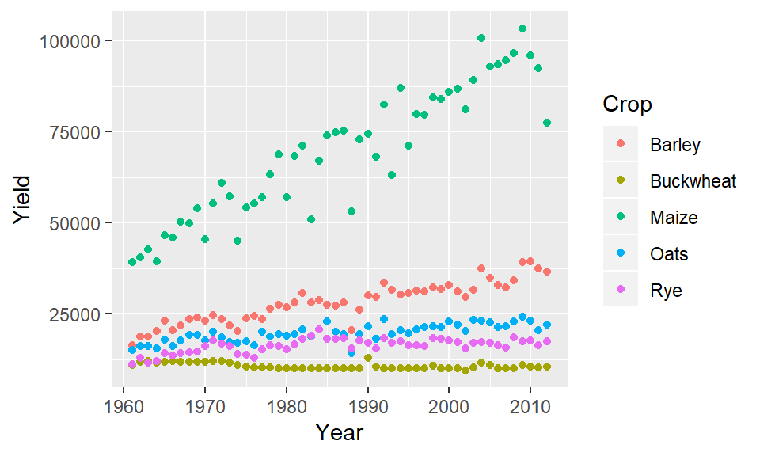
Note that the aesthetics are still mapped in the same way with Year mapped to the x coordinate, Yield mapped to the y coordinate and Crop mapped to the geom’s color.
Note that the parameters x= and y= can be omitted from the syntax reducing the line of code to:
ggplot(dat1l , aes(Year, Yield, color = Crop)) + geom_line()Geometries
Examples of a few available geometric elements follow.
geom_line
geom_line generates line geometries. We’ll use data from dat1w to generate a simple plot of oat yield as a function of year.
ggplot(dat1w, aes(x = Year, y = Oats)) + geom_line() 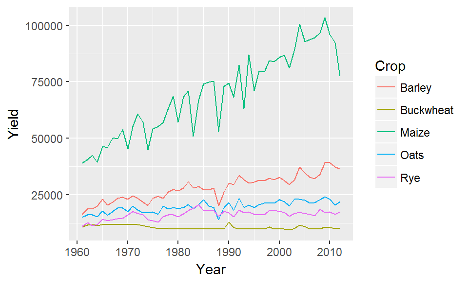
Parameters such as color and linetype can be passed directly to the geom_line() function:
ggplot(dat1w, aes(x = Year, y = Oats)) +
geom_line(linetype = 2, colour = "blue", size=0.4) Note the difference in how colour= is implemented here. It’s no longer mapping a variable’s levels to a range of colors as when it’s called inside of the aes() function, instead, it’s setting the line color to blue.
geom_point
This generates point geometries. This is often used in generating scatterplots. For example, to plot male income (variable B20004013) vs female income (variable B20004007), type:
ggplot(dat2, aes(x = B20004013, y = B20004007)) + geom_point(alpha = 0.3) 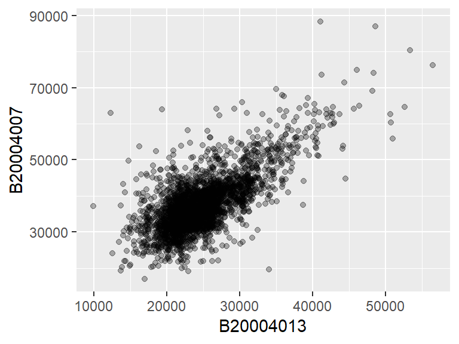
We modify the point’s transparency by passing the alpha=0.3 parameter to the geom_point function. Other parameters that can be passed to point geoms include colour, pch (point symbol type) and cex (point size as a fraction).
ggplot(dat2, aes(x = B20004013, y = B20004007)) +
geom_point(colour = "red", pch=3 , alpha = 0.3, cex=0.6) 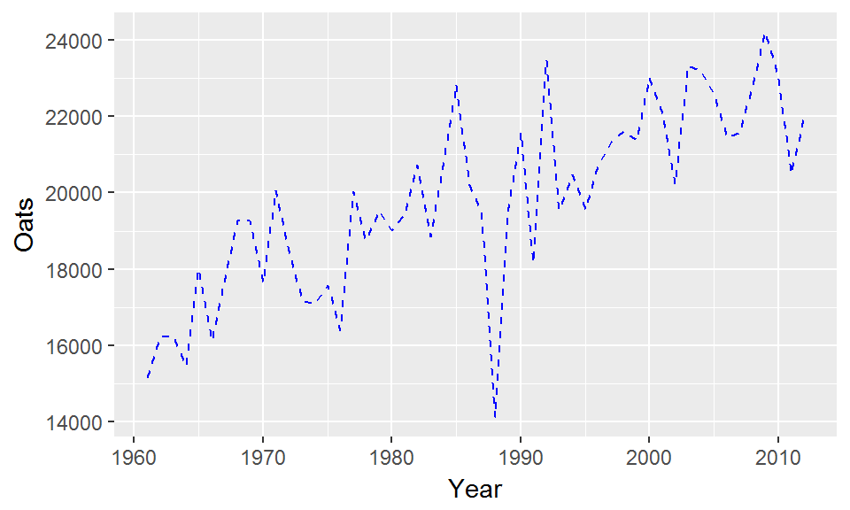
geom_hex
When a bivariate scatter plot has too many overlapping points, it may be helpful to bin the observations into regular hexagons. This provides the number of observations per bin.
ggplot(dat2, aes(x = B20004013, y = B20004007)) +
geom_hex(binwidth = c(1000, 1000)) The binwidth argument defines the width and height of each bin in the variables’ axes units.
geom_boxplot
In the following example, a boxplot of Yield is generated for each crop type.
ggplot(dat1l, aes(x = Crop, y = Yield)) + geom_boxplot(fill = "bisque") 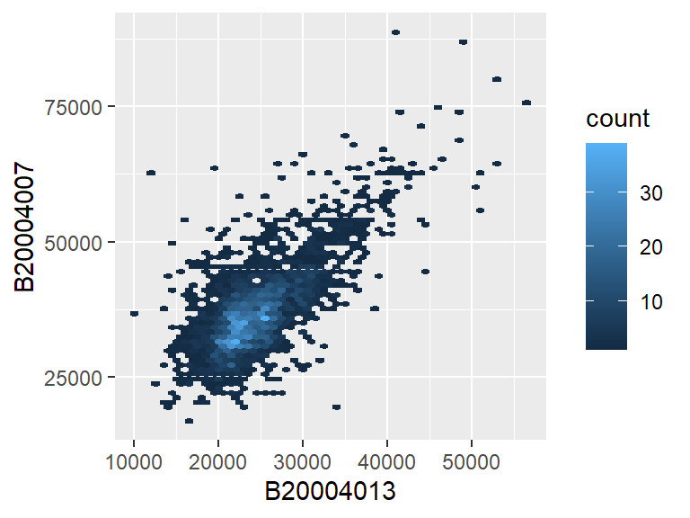
If we want to generate a single boxplot (for example for all yields irrespective of crop type) we need to pass a dummy variable to x=:
ggplot(dat1l, aes(x = "", y = Yield)) +
geom_boxplot(fill = "bisque") + xlab("All crops")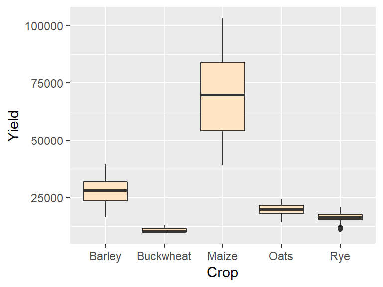
geom_violin
A violin plot is a symmetrical version of a density plot which provides greater detail of a sample’s distribution than a boxplot.
ggplot(dat1l, aes(x = "", y = Yield)) + geom_violin(fill = "bisque") 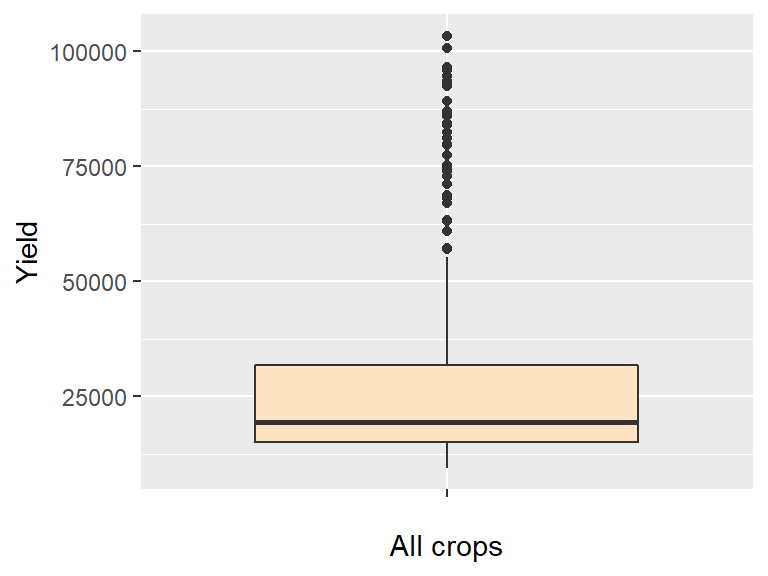
geom_histogram
Histograms can be plotted for single variables only (unless faceting is used) as can be noted by the absence of a y= parameter in aes():
ggplot(dat1w, aes(x = Oats)) + geom_histogram(fill = "grey50") 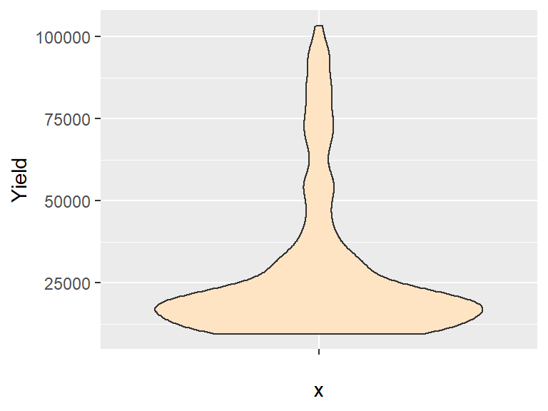
The bin widths can be specified in terms of the value’s units. In our example, the unit is yield of oats (in Hg/Ha). So if we want to generate bin widths that cover 1000 Hg/Ha, we can type,
ggplot(dat1w, aes(x = Oats)) +
geom_histogram(fill = "grey50", binwidth = 1000) 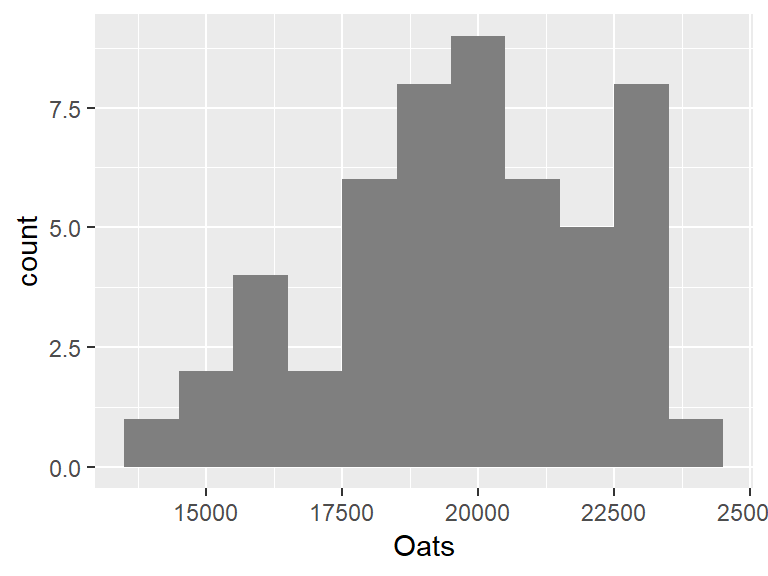
If you want to control the number of bins, use the parameter bins= instead. For example, to set the number of bins to 8, modify the above code chunk as follows:
ggplot(dat1w, aes(x = Oats)) +
geom_histogram(fill = "grey50", bins = 8) geom_bar
Bar plots are used to summaries the counts of a categorical value. For example, to plot the number of counties in each state (note that each record in dat2 is assigned a county):
ggplot(dat2, aes(State)) + geom_bar()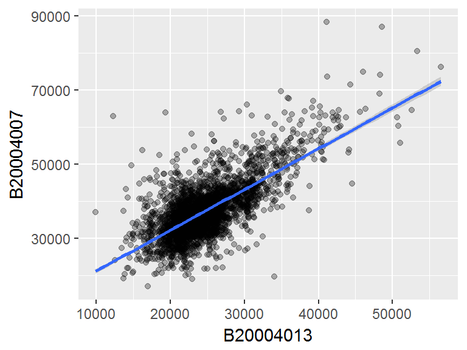
To sort the bars by length we need to rearrange the State factor level order based on the number of counties in each state (which is the number of times a state appears in the data frame). We’ll make use of forcats’s fct_infreq function to reorder the State factor levels based on frequency.
library(forcats)
ggplot(dat2, aes(fct_infreq(State,ordered = TRUE))) + geom_bar()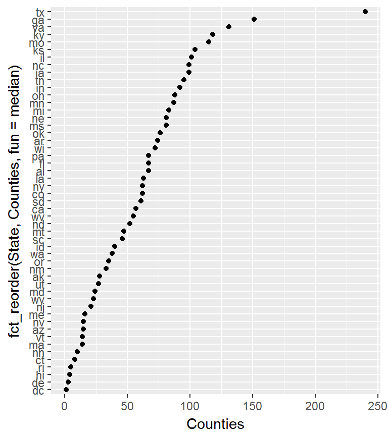
If we want to reverse the order (i.e. plot from smallest number of counties to greatest), wrap the fct_infreq function with fct_rev.
ggplot(dat2, aes(fct_rev(fct_infreq(State,ordered = TRUE)))) + geom_bar()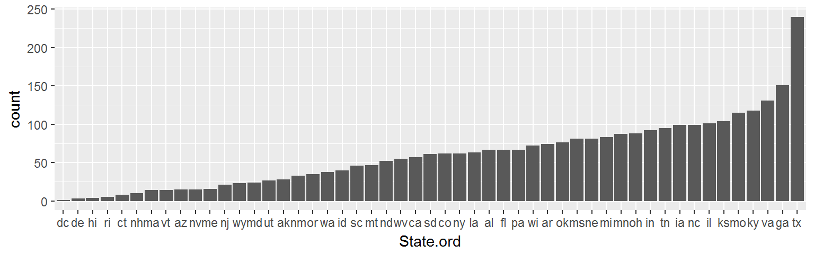
The geom_bar function can also be used with count values (i.e. variable already summarized by count). First, we’ll summaries the number of counties by state using the dplyr package. This will generate a data frame with just 51 records: one for each of the 50 states and the District of Columbia.
library(dplyr)
dat2.ct <- dat2 %>% group_by(State) %>%
summarize(Counties = n())
head(dat2.ct)# A tibble: 6 x 2
State Counties
<fct> <int>
1 ak 28
2 al 67
3 ar 74
4 az 15
5 ca 57
6 co 62When using summarized data, we must pass the parameter stat="identity" to the geom_bar function. We must also explicitly map the x and y axes geometries. Note that since we are now generating bar heights from a value field and not a frequency, we will need to use another forcats ordering function called fct_reorder. This function takes three parameters: the variable to be ordered (State), the variable whose values will determine the order (Counties) and the function, fun=, which defines the statistic used to summaries the sorting variable. Since there is just one value per state, we can use any summary statistic such as median, mean, sum, min or max.
ggplot(dat2.ct, aes(x=fct_reorder(State, Counties, fun = median), y = Counties)) +
geom_bar(stat = "identity")
Note that you can replace fct_reorder with the base function reorder for succinctness sake.
dot plot
The dot plot is an alternative way to visualize counts as a function of a categorical variable. Instead of mapping State to the x-axis, we’ll map it to the y-axis.
ggplot(dat2.ct , aes(x = Counties, y = State)) + geom_point()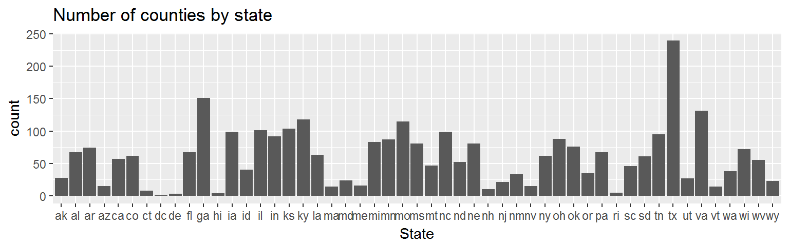
Dot plot graphics benefit from sorting–more so then bar plots. Here, we’ll make use of forcats::fct_reorder function (see last section on geom_bar).
ggplot(dat2.ct , aes(x = Counties, y = fct_reorder(State, Counties,fun = median))) +
geom_point()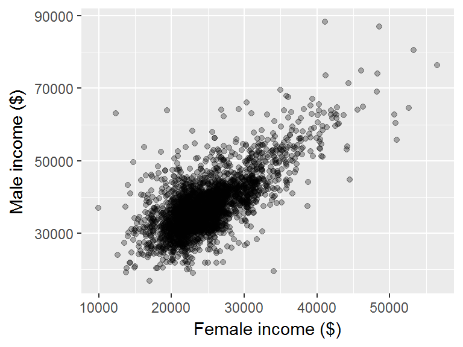
Combining geometries
Geometries can be layered. For example, to overlay a linear regression line to the data we can add the geom_smooth layer:
ggplot(dat2, aes(x = B20004013, y = B20004007)) +
geom_point(alpha = 0.3) +
geom_smooth(method = "lm")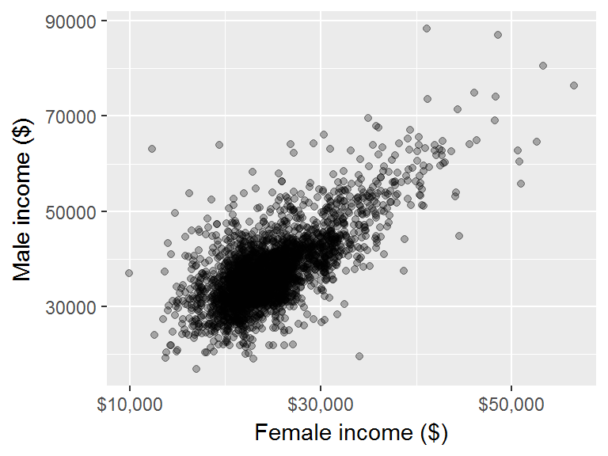
The geom_smooth can be used to fit other lines such as a loess:
ggplot(dat2, aes(x = B20004013, y = B20004007)) +
geom_point(alpha = 0.3) +
geom_smooth(method = "loess")
The confidence interval can be removed from the smooth geometry by specifying se = FALSE.
ggplot(dat2, aes(x = B20004013, y = B20004007)) +
geom_point(alpha = 0.3) +
geom_smooth(method = "loess", se = FALSE)Combining datasets
You can plot different datasets on the same ggplot canvas. This approach usually requires that each geom be assigned its own dataset and aesthetics. In the following example, we’ll compute the High Density Region (HDR) boxplot parameters using the hdrcde package, then use these parametersto construct geom_rect() that will be added to a geom_point element that will be built from the parent dataset. When data and aesthetics are defined in a geom function, the ggplot() function must be explictly called right from the beginning.
library(hdrcde)
# Compute the HDR boxplot
hdr1d <- hdr(dat2$B20004013, prob = c(25, 50, 99))
# Build the data frame that will store the geom_rect variables
hdr.df <- data.frame(hdr1d$hdr)
cols <- grey(1/(1:nrow(hdr.df)) )
# Build the plot
ggplot() +
geom_point(data = dat2, aes(x = 0 , y = B20004013), pch = 16, alpha = 0.5) +
geom_rect(dat = hdr.df, aes(
xmin = -0.2, xmax = 0.2,
ymin = X1, ymax = X2),
fill = cols, colour = "grey") +
theme(axis.title.x = element_blank(), # Remove x-axis
axis.text.x = element_blank(),
axis.ticks.x = element_blank())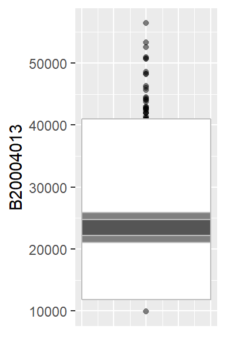
The HBR boxplot is designed to visualize multi-modality on the dataset (i.e. data having more than one peak). In the above example, the boxes are encompassing 25%, 50% and 99% of the data.
Tweaking a ggplot2 graph
Plot title
You can add a plot title using the ggtile function.
ggplot(dat2, aes(State)) + geom_bar() + ggtitle("Number of counties by state")Axes titles
Axes titles can be explicitly defined using the xlab() and ylab() functions.
ggplot(dat2, aes(x = B20004013, y = B20004007)) + geom_point(alpha = 0.3) +
xlab("Female income ($)") + ylab("Male income ($)")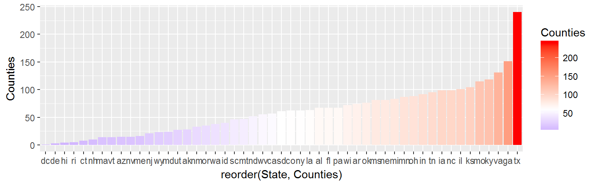
To remove axis labels, simply pass NULL to the functions as in xlab(NULL) and ylab(NULL).
Axes labels
You can customize an axis’ label elements. If you are mapping continuous values along the x and y axes, use the scale_x_continuous() and scale_y_continuous() functions. For example, to specify where to place the tics and the accompanying labels, type:
ggplot(dat2, aes(x = B20004013, y = B20004007)) + geom_point(alpha = 0.3) +
xlab("Female income ($)") + ylab("Male income ($)") +
scale_x_continuous(breaks = c(10000, 30000, 50000),
labels = c("$10,000", "$30,000", "$50,000"))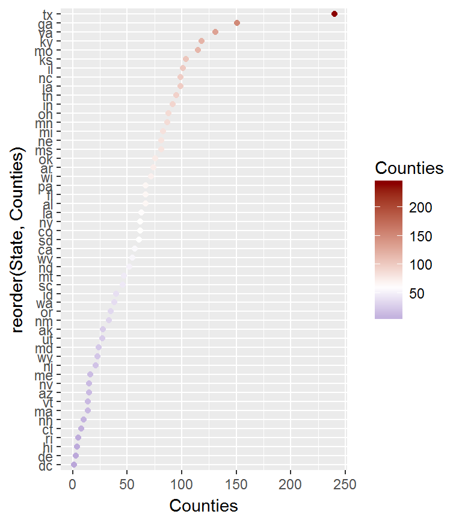
If you want to change the label formats whereby the numbers are truncated to a thousandth of their original value, you can make use of unit_format() from the scales package:
ggplot(dat2, aes(x=B20004013, y=B20004007)) + geom_point(alpha=0.3) +
xlab("Female income ($)") + ylab("Male income ($)") +
scale_x_continuous(labels=scales::unit_format(suffix="k",
scale=0.001,
sep="")) +
scale_y_continuous(labels=scales::unit_format(suffix="k",
scale=0.001,
sep=""))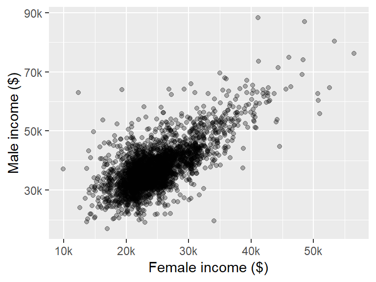
The scales package also has a comma_format() function that will add commas to large numbers:
ggplot(dat2, aes(x = B20004013, y = B20004007)) + geom_point(alpha = 0.3) +
xlab("Female income ($)") + ylab("Male income ($)") +
scale_x_continuous(labels = scales::comma_format()) +
scale_y_continuous(labels = scales::comma_format())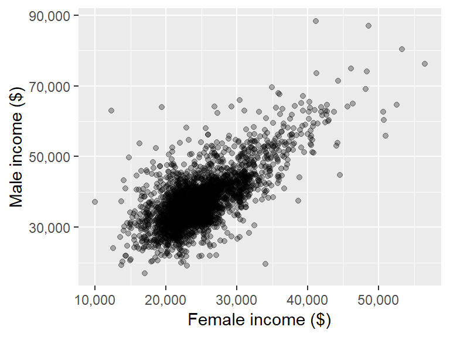
Axes limits
The axis range can be set using xlim() and ylim().
ggplot(dat2, aes(x = B20004013, y = B20004007)) + geom_point(alpha = 0.3) +
xlab("Female income ($)") + ylab("Male income ($)") +
xlim(10000, 75000) + ylim(10000, 75000)However, if you are calling the scale_x_continuous() and scale_y_continuous() functions, you do not want to use xlim and ylim instead, you should add the limit= parameter to the aforementioned functions. For example,
ggplot(dat2, aes(x = B20004013, y = B20004007)) + geom_point(alpha = 0.3) +
xlab("Female income ($)") + ylab("Male income ($)") +
scale_x_continuous(limit = c(10000, 75000),
labels = scales::comma_format()) +
scale_y_continuous(limit = c(10000, 75000),
labels = scales::comma_format())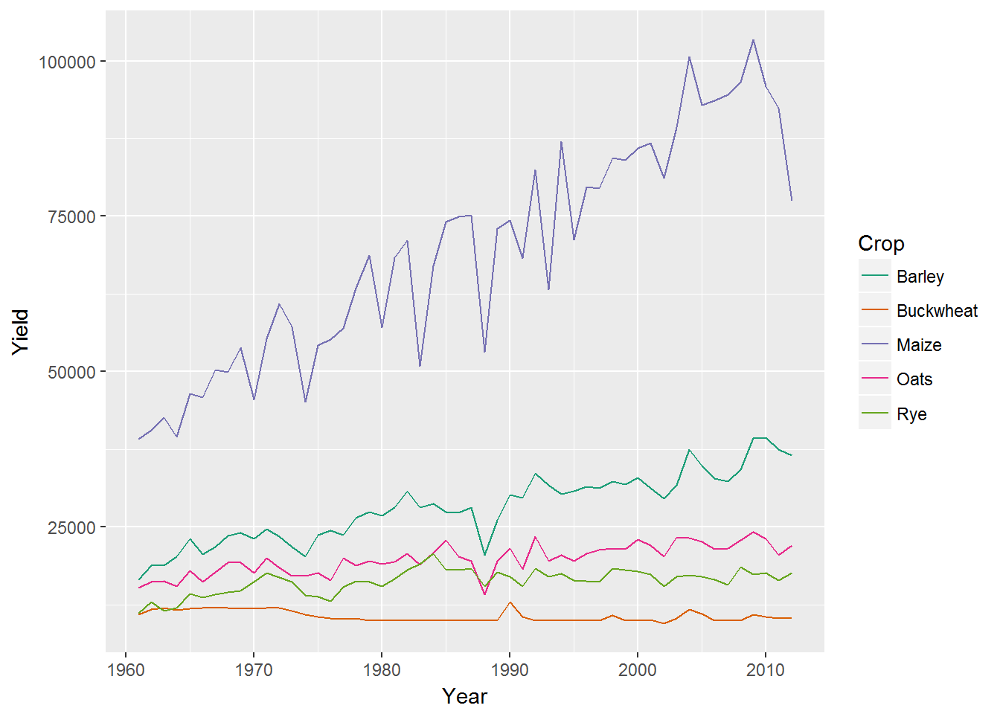
Axes and data transformations
If you wish to apply a non-linear transformation to either axes (while preserving the untransformed axis values) add the coord_trans() function as follows:
ggplot(dat2, aes(x = B20004013, y = B20004007)) + geom_point(alpha = 0.3) +
xlab("Female income ($)") + ylab("Male income ($)") +
coord_trans(x = "log")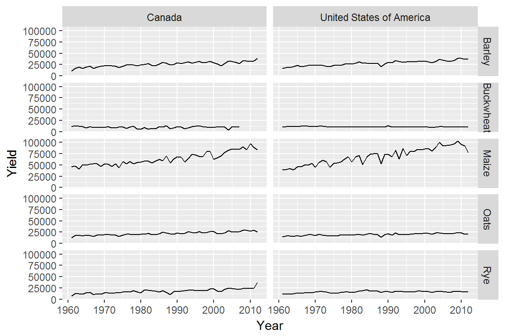
You can also transform the y-axis by specifying the parameter y=. The log transformation defaults to the natural log. For a log base 10, use "log10" instead. For a square root transformation, use "sqrt". For the inverse use "reciprocal".
Advanced transformations can be called via the scales package. For example, to implement the box-cox transformation (with a power of -0.3), type:
ggplot(dat2, aes(x = B20004013, y = B20004007)) + geom_point(alpha = 0.3) +
xlab("Female income ($)") + ylab("Male income ($)") +
coord_trans(x = scales::boxcox_trans(-0.3))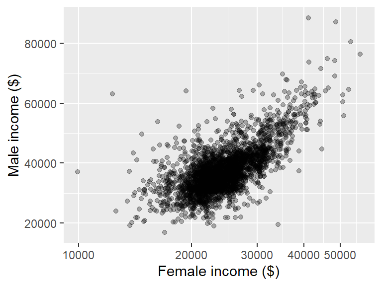
Note that any statistical geom (such as the regression line) will be applied to the un-transformed data. So a linear model may end up looking non-linear after an axis transformation:
ggplot(dat2, aes(x = B20004013, y = B20004007)) + geom_point(alpha = 0.3) +
geom_smooth(method = "lm", se = FALSE) +
xlab("Female income ($)") + ylab("Male income ($)") +
coord_trans(x = "log")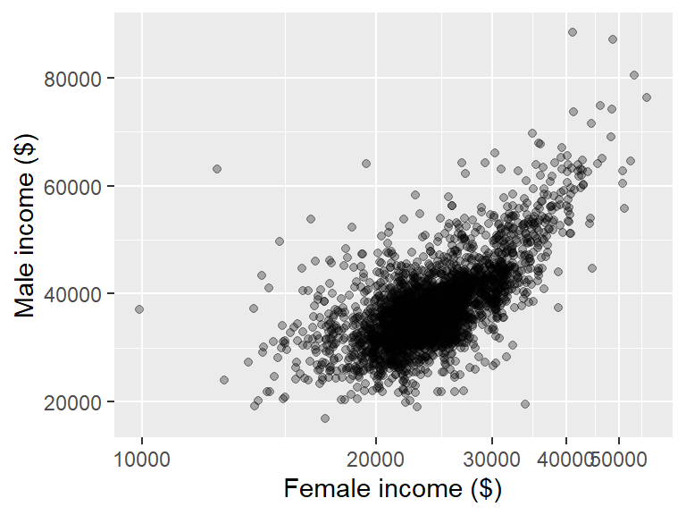
If a linear fit is to be applied to the transformed data, a better alternative is to transform the values instead of the axes. The transformation can be done on the original data or it can be implemented in ggplot using the scale_x_continuous and scale_y_continuous functions.
ggplot(dat2, aes(x = B20004013, y = B20004007)) + geom_point(alpha = 0.3) +
geom_smooth(method = "lm", se = FALSE) +
xlab("Female income ($)") + ylab("Male income ($)") +
scale_x_continuous(trans = "log", breaks = seq(10000,60000,10000))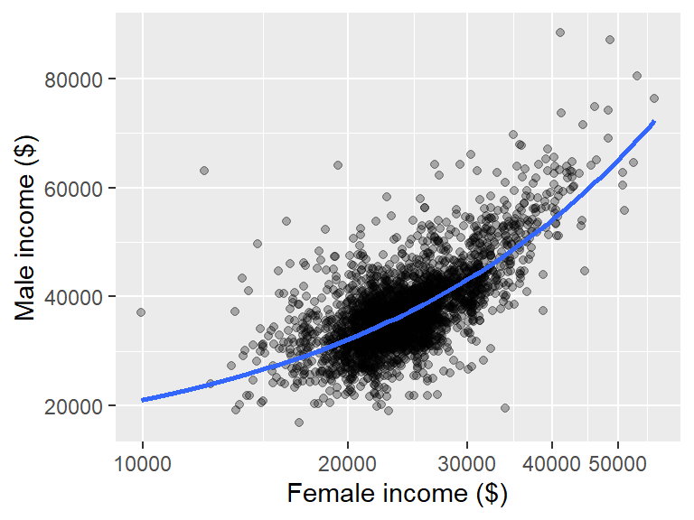
The scale_x_continuous and scale_y_continuous functions will accept scales transformation parameters–e.g. scale_x_continuous(trans = scales::boxcox_trans(-0.3)). Note that the parameter breaks is not required but is used here to highlight the transformed nature of the axis.
Aspect ratio
You can impose an aspect ratio to your plot using the coord_equal() function. For example, to set the axes units equal (in length) to one another set ratio=1:
ggplot(dat2, aes(x = B20004013, y = B20004007)) + geom_point(alpha = 0.3) +
geom_smooth(method = "lm") +
xlab("Female income ($)") + ylab("Male income ($)") +
coord_equal(ratio = 1)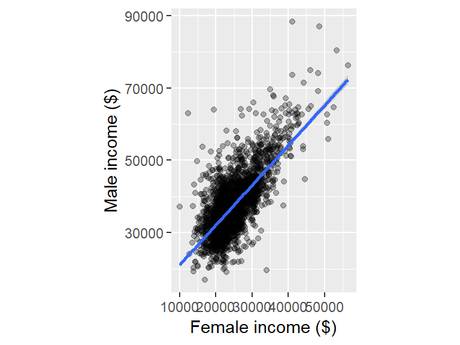
Colors
You can customize geom colors using one of two sets of color schemes: one for continuous values, the other for categorical (discrete) values.
| Continuous | Categorical |
|---|---|
|
|
A few examples follow.
Continuous color schemes
The following chunk of code summarizes dat2 by tallying the number of counties in each state and by computing the median county income values.
dat2.ct2 <- dat2 %>% group_by(State) %>%
summarize(Counties = n(), Income = median(B20004001))
head(dat2.ct2)# A tibble: 6 x 3
State Counties Income
<fct> <int> <dbl>
1 ak 28 33980.
2 al 67 28946
3 ar 74 26320.
4 az 15 28799
5 ca 57 33438
6 co 62 30892.The following chunk applies a green to red color gradient fill to each bar based on the median county incomes. Note that we are using the summarized count table (and not the original dat2 table). Recall that when plotting bars from counts that are already tabulated we must specify stat="identity" in the geom_bar function.
ggplot(dat2.ct2, aes(x = fct_reorder(State, Counties), y = Counties, fill = Income)) +
geom_bar(stat = "identity") +
scale_fill_gradient(low = "green", high = "red")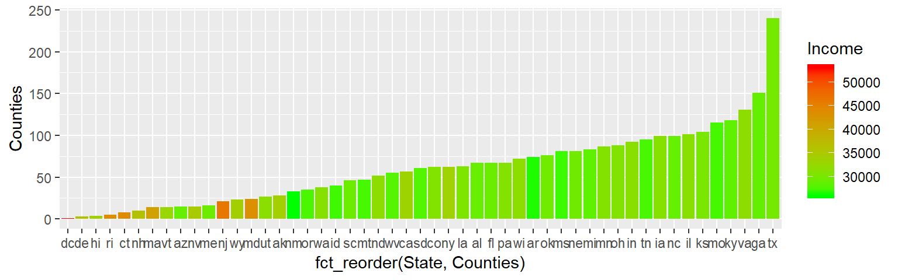
The following chunk applies a divergent color scheme while allowing one to specify the central value of this scheme. Note that the colors are symmetrical about the midpoint which may result in only a partial range of the full possible gradient of colors.
ggplot(dat2.ct2, aes(x = fct_reorder(State, Counties), y = Counties, fill = Income)) +
geom_bar(stat = "identity") +
scale_fill_gradient2(low = "darkred", mid = "white", high = "darkgreen",
midpoint = 30892)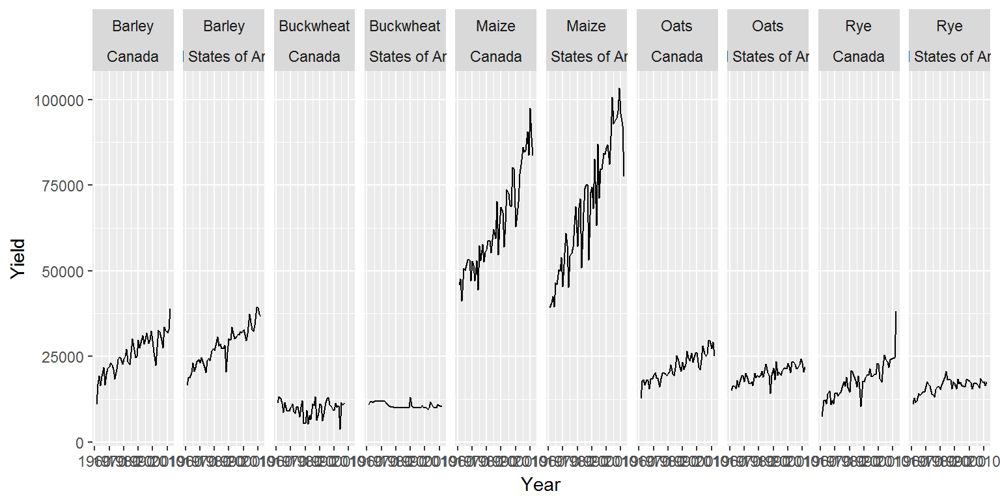
In the last two chunk, we filled the bars with colors (note the use of functions with the string _fill_). When assigning color to point or line symbols, use the function with the _colour_ string. For example:
ggplot(dat2.ct2, aes(y = fct_reorder(State, Counties), x = Counties, col = Income)) +
geom_point() +
scale_colour_gradient2(low = "darkred", mid = "white", high = "darkgreen",
midpoint = 30892)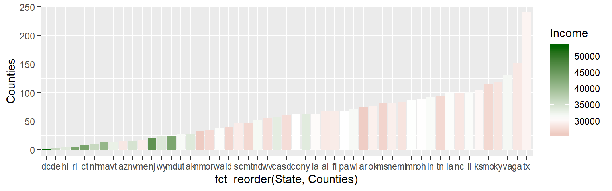
Categorical color schemes
In the following chunk, we assign colors manually to each level in the variable Yield. The order of the color names mirror the order of the variable levels.
ggplot(dat1l, aes(Year, Yield, col = Crop)) +
geom_line() +
scale_colour_manual(values = c("red", "orange", "green", "blue", "yellow"))
The following chunk applies a predefined discrete color scheme named Dark2 to each level.
ggplot(dat1l, aes(Year, Yield, col = Crop)) +
geom_line() +
scale_colour_brewer(palette = "Dark2")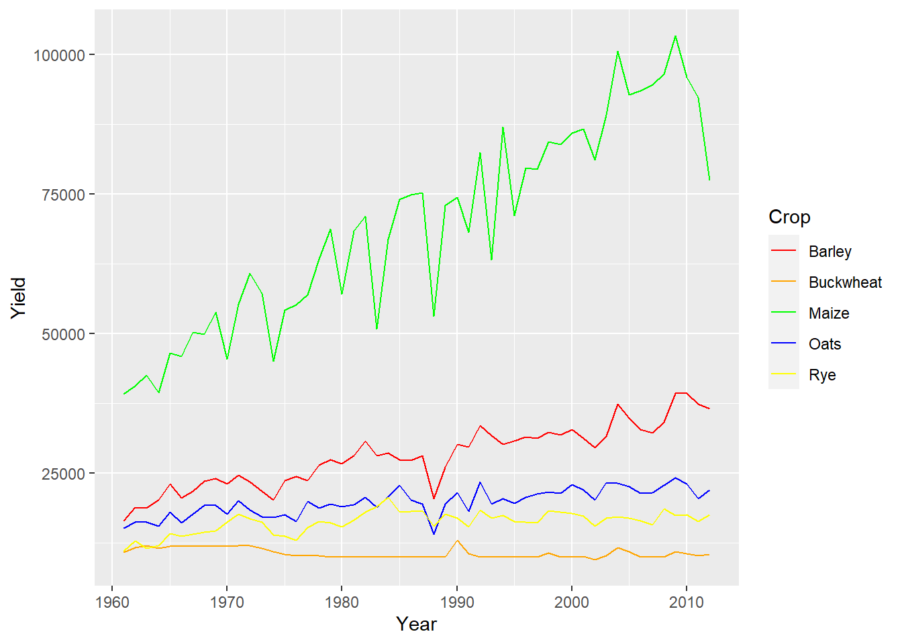
To see a list of predefined scale_colour_brewer colors, type ?scale_colour_brewer at the console.
Adding mathematical symbols to a plot
You can embed math symbols using plotmath’s mathematical expressions by wrapping these expressions in an expression() function. For example,
ggplot(dat2, aes(x = B20004013^0.333, y = sqrt(B20004007))) + geom_point(alpha = 0.3) +
xlab( expression( ("Female income") ^ frac(1,3) ) ) +
ylab( expression( sqrt("Male income") ) )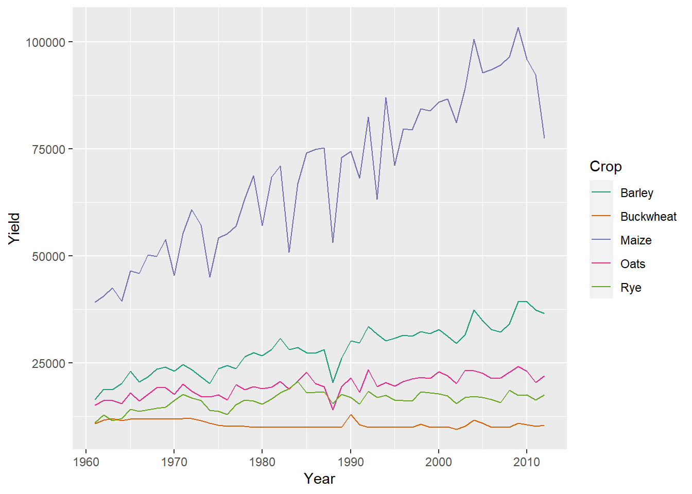
To view the full list of mathematical expressions, type ?plotmath at a command prompt.
Faceting
Faceting by categorical variable
Faceting (or conditioning on a variable) can be implemented in ggplot2 using the facet_wrap() function.
ggplot(dat1l2, aes(x = Year, y = Yield, color = Crop)) + geom_line() +
facet_wrap( ~ Country, nrow = 1)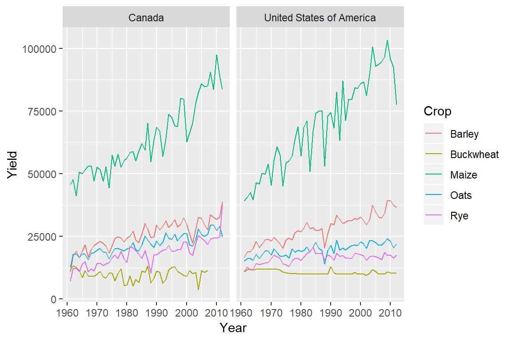
The parameter ~ Country tells ggplot to condition the plots on country. If we wanted the plots to be stacked, we would set nrow to 2.
We can also condition the plots on two variables such as crop and Country.
ggplot(dat1l2, aes(x = Year, y=Yield)) + geom_line() +
facet_wrap(Crop ~ Country, nrow = 1)This creates as many plots as there are unique combinations of variables Crop and Country. But such plots are usually best represented in a grid structure where one variable is spread along one axis and the other variable is spread along another axis of the plot layout. This can be accomplished using the facet_grid function:
ggplot(dat1l2, aes(x = Year, y = Yield)) + geom_line() +
facet_grid( Crop ~ Country)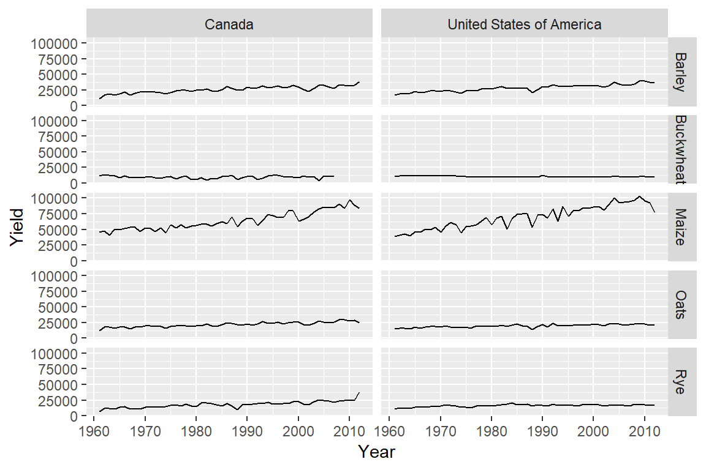
Faceting by continuous variable
In the above example, we are faceting the plots based on a categorical variable: Country and/or crop. But what if we want to facet the plots based on a continuous variable? For example, we might be interested in comparing male and female incomes across different female income ranges. This requires that a new categorical field (a factor) be created assigning to each case (row) an income group. We can use the cut() function to accomplish this task (we’ll also omit all values greater than 100,000):
dat2c$incrng <- cut(dat2c$F , breaks = c(0, 25000, 50000, 75000, 100000) )
head(dat2c) State County Level Region All F M incrng
1 ak Aleutians East Borough All West 21953 20164 22940 (0,2.5e+04]
2 ak Aleutians East Borough NoHS West 21953 19250 22885 (0,2.5e+04]
3 ak Aleutians East Borough HS West 20770 19671 21192 (0,2.5e+04]
4 ak Aleutians East Borough AD West 26383 26750 26352 (2.5e+04,5e+04]
5 ak Aleutians East Borough BD West 22431 19592 27875 (0,2.5e+04]
6 ak Aleutians East Borough Grad West 74000 74000 71250 (5e+04,7.5e+04]In this chunk of code, we create a new variable, incrng, which is assigned an income category group depending on which range dat2c$F (female income) falls into. The income interval breaks are defined in breaks=. In the output, you will note that the factor incrng defines a range of incomes (e.g. (0 , 2.5e+04]) where the parenthesis ( indicates that the left-most value is exclusive and the bracket ] indicates that the right-most value is inclusive.
However, because we did not create categories that covered all income values in dat2c$F we ended up with a few NA’s in the incrng column:
summary(dat2c$incrng) (0,2.5e+04] (2.5e+04,5e+04] (5e+04,7.5e+04] (7.5e+04,1e+05] NA's
9419 7520 1425 33 5 We will remove all rows associated with missing incrng values:
dat2c <- na.omit(dat2c)
summary(dat2c$incrng) (0,2.5e+04] (2.5e+04,5e+04] (5e+04,7.5e+04] (7.5e+04,1e+05]
9419 7520 1425 33 We can list all unique levels in our newly created factor using the levels() function.
levels(dat2c$incrng) [1] "(0,2.5e+04]" "(2.5e+04,5e+04]" "(5e+04,7.5e+04]" "(7.5e+04,1e+05]"The intervals are not meaningful displayed as is (particularly when scientific notation is adopted). So we will assign more meaningful names to our factor levels as follows:
levels(dat2c$incrng) <- c("Under 25k", "25k-50k", "50k-75k", "75k-100k")
head(dat2c) State County Level Region All F M incrng
1 ak Aleutians East Borough All West 21953 20164 22940 Under 25k
2 ak Aleutians East Borough NoHS West 21953 19250 22885 Under 25k
3 ak Aleutians East Borough HS West 20770 19671 21192 Under 25k
4 ak Aleutians East Borough AD West 26383 26750 26352 25k-50k
5 ak Aleutians East Borough BD West 22431 19592 27875 Under 25k
6 ak Aleutians East Borough Grad West 74000 74000 71250 50k-75kNote that the order in which the names are passed must match that of the original breaks.
Now we can facet male vs. female scatter plots by income ranges. We will also throw in a best fit line to the plots.
ggplot(dat2c, aes(x = F, y = M)) + geom_point(alpha=0.2, pch=20) +
geom_smooth(method = "lm", col = "red") +
facet_grid( . ~ incrng) 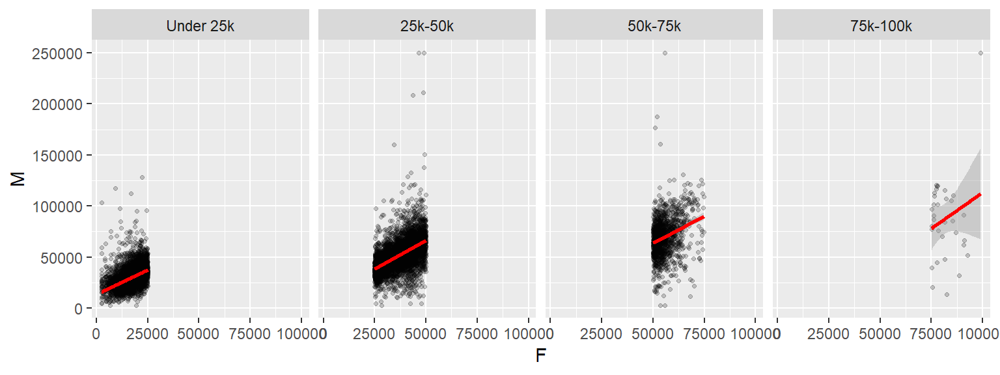
One reason we would want to explore our data across different ranges of value is to assess the consistency in relationship between variables. In our example, this plot helps assess whether the relationship between male and female income is consistent across income groups.
Adding 45° slope using geom_abline
We will add a 45° line using geom_abline (where the intercept will be set to 0 and the slope to 1) to help visualize the discrepancy between the batches of values. So if a point lies above the 45° line, then male’s income is greater, if the point lies below the line , then female’s income is greater.
To help highlight differences in income, we will make a few changes to the faceted plots. First, we will reduce the y-axis range to $0-$150k (this will remove a few points from the data); we will force the x-axis and y-axis units to match so that a unit of $50k on the x-axis has the same length as that on the y-axis. We will also reduce the number of x tics and assign shorthand notation to income values (such as “50k” instead of “50000”). All this can be accomplished by adding the scale_x_continuous() function to the stack of ggplot elements.
ggplot(dat2c, aes(x = F, y = M)) + geom_point(alpha = 0.2, pch = 20, cex = 0.8) +
ylim(0, 150000) +
geom_smooth(method = "lm", col = "red") +
facet_grid( . ~ incrng) +
coord_equal(ratio = 1) +
geom_abline(intercept = 0, slope = 1, col = "grey50") +
scale_x_continuous(breaks = c(50000, 100000), labels = c("50k", "100k"))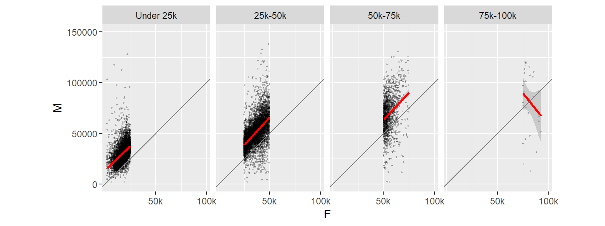
Note the change in regression slope for the last facet. The geom_smooth operation is only applied to the data limited to the axis range defined by ylim.
Now let’s look at the same data but this time conditioned on educational attainment.
# Plot M vs F by educational attainment except for Level == All
ggplot(dat2c, aes(x = F, y = M)) + geom_point(alpha = 0.2, pch = 20, cex = 0.8) +
ylim(0, 150000) +
geom_smooth(method = "lm", col = "red") +
facet_grid( . ~ Level) +
coord_equal(ratio = 1) +
geom_abline(intercept = 0, slope = 1, col = "grey50") +
scale_x_continuous(breaks = c(50000, 100000), labels =c("50k", "100k"))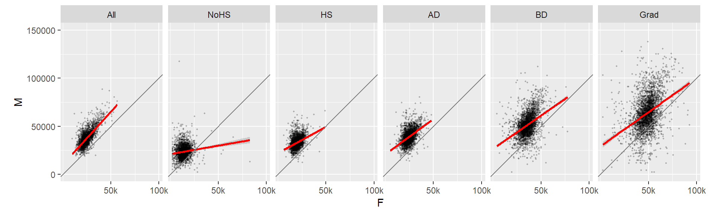
We can also condition the plots on two variables: educational attainment and region.
ggplot(dat2c, aes(x = F, y = M)) + geom_point(alpha = 0.2, pch = 20, cex = 0.8) +
ylim(0, 150000) +
geom_smooth(method = "lm", col = "red") +
facet_grid( Region ~ Level) +
coord_equal(ratio = 1) +
geom_abline(intercept = 0, slope = 1, col = "grey50") +
scale_x_continuous(breaks = c(50000, 100000), labels = c("50k", "100k"))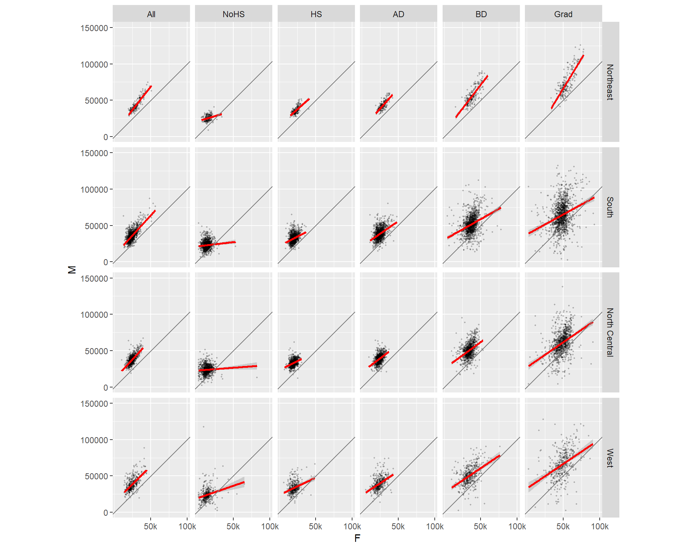
Tile plots (aka heat maps)
You can create so-called heat maps by tiling the data. This typically requires the use of three variables–two of which are either categorical or have equally spaced continuous values that define a rectangular grid layout, and the third that defines the grid cells’ color. For example, a tile plot can be created showing the median income (for all sexes) as a function of education level and region.
dat2c.med <- dat2c %>%
filter(Level != "All") %>%
group_by(Level, Region) %>%
summarise(Income = median(All))
ggplot(dat2c.med, aes(x = Region, y = Level, fill = Income)) + geom_tile() +
scale_fill_gradient(low = "yellow", high = "red")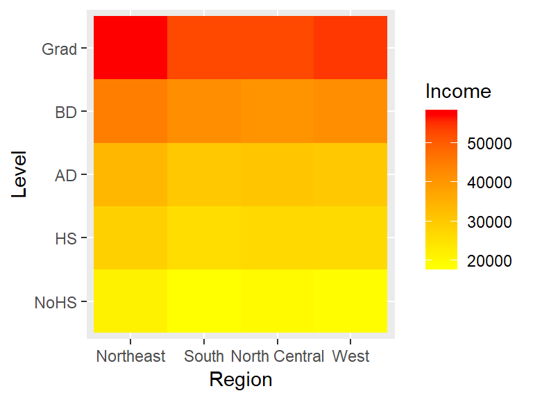
 Manny Gimond (2019)
Manny Gimond (2019)